Watson Assistant: Actions
PRODUCT
Animation
2019–2021
Background
Watson Assistant is a chatbot building platform that is powered by IBM’s proprietary natural language processing and understanding technologies. It enables companies to more efficiently help customers answer questions, solve issues, and complete tasks.
Project Overview
As a Product Designer working closely with my Design Lead, I joined this project early to design and implement a new version of Watson Assistant, dubbed "Actions." My focus was on the core interaction model — the Actions framework — and the key surfaces non-technical users would rely on to build chatbots more quickly than with the existing Dialog version.
My Role
Working closely with my Design Lead, I owned the end-to-end design of the Actions framework — the new conceptual model for non-technical chatbot builders. My specific contributions included the Actions table, Step authoring experience, the Outline Panel for navigating and reordering conversation flows, the non-obstructive Preview panel, and short-form animations to communicate the system at a high level. I collaborated throughout with design research, development, and product owners.
The Challenge
Our target persona is Tanya, typically a non-developer who has varying levels of domain understanding and expertise. She is responsible for designing conversational content flows and training Watson in her company's domain. Following a series of competitive analysis and research sessions which tested Dialog, the existing version of Assistant, against Tanya-like users we found three key issues:
- It's often too complicated for non-technical, non-developers to build and manage.
- Branching visualisations are harder to keep track of and require a lot of effort to make changes to an existing conversation flow.
- It often takes a long time to build out your first conversation and see how your end-user or customer will interact with your assistant.
Actions & Steps: A New Conceptual Model
To enable our non-technical users to more quickly build an Assistant, we created a new conceptual model that focused on modular conversational components grouped around topics. We called these “Actions” since they are based around a specific task or question that a company’s customer would ask.
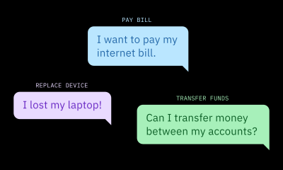
Actions are composed of smaller components called "Steps", which represent a turn in conversation. Steps represent the clarification questions or final answers in the action. Everything else that the step needs to function like the logic, the response options, or the storage of the user’s response is contained within it.

Starting the Conversation
For a customer to begin chatting with your Assistant you have to create a customer "intent". The current version, Dialog, requires Tanya to create customer "intents” separately from the context of her Dialog tree. This creates a conceptual disconnect that many first time users are confused by. Users often need help or onboarding to orient themselves within the product.
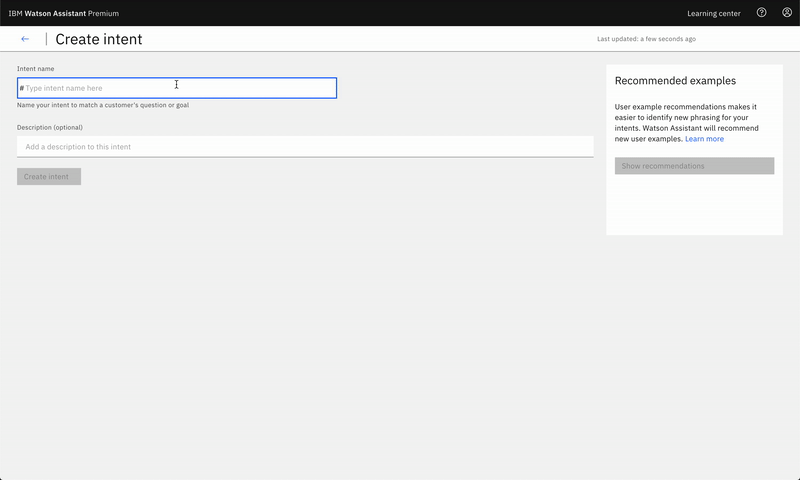
To improve on the existing experience we wanted to focus Tanya on the task at hand. Instead of separating the intent creation section from the conversation builder, we integrated intents as the first thing Tanya creates in her Action.
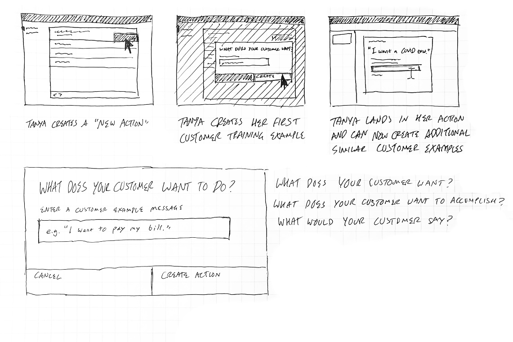
When Tanya goes to create her first Action, she is prompted to answer a simple question: "What does your customer want to accomplish?" We wanted to prime her to think from the perspective of her customer/end-user and come up with a compelling first prompt and example for her assistant to train on.
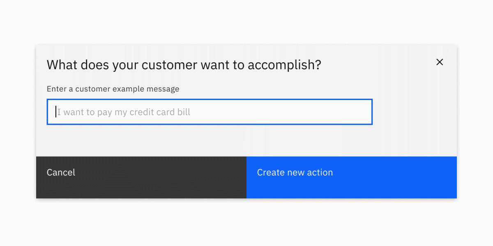
Content-First Authoring
In Dialog, Tanya selects the specific node branch she wants to edit, triggering the content authoring section to slide out from the right and cover up her node diagram. This design lacked focus and a clear direction since Tanya is presented with so much information to process when she goes to configure her node.

In order to remedy the issues found in the Dialog editor, we decided to strip out many of the unnecessary elements within the authoring section. By utilising progressive disclosure as a guiding principle, we wanted to display only the most necessary elements on the page first. Any deeper configuring elements were nested within dropdowns and modals that could provide Tanya with additional context.
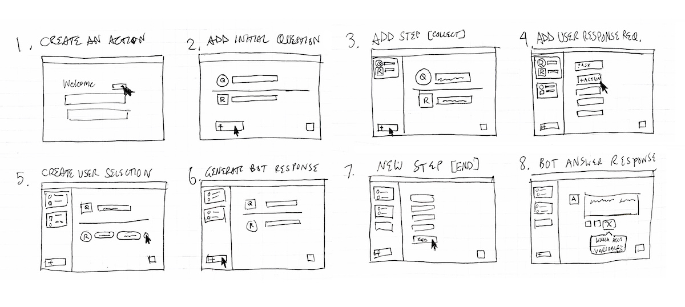
The authoring section in the center of the page allows Tanya to focus on the three major pieces within each step. One – does this step require conditions to trigger? Two – what is the assistant saying to your customer? Three – what happens after the step finishes? Additional configuration options reveal themselves after further interaction from Tanya.
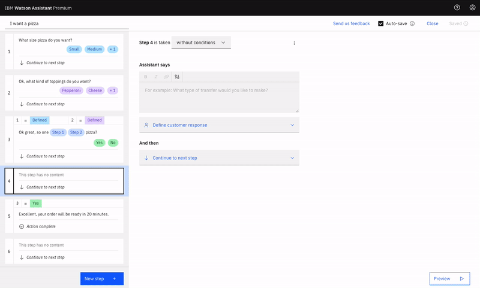
Organising Your Conversation
To organise your conversation, Dialog relies on the traditional tree-like branching structure that many of our competitors use. As you can see from the video below, once you have a large enough Assistant, your node tree can become bloated and unwieldy. This costs Tanya and her team hours of per week of searching, scanning and clicking into nodes, folders, and child-nodes in order to make simple changes to her Assistant.
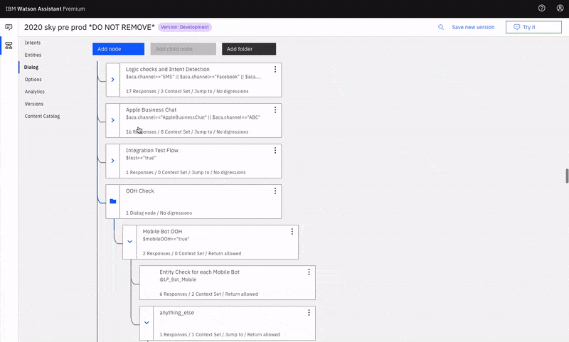
Luckily for Tanya, our modular conceptual model does away with the clutter and confusing web of nested nodes and connections. Actions sit at the highest level in the Actions table. No more scanning through endless vague, unnamed nodes to locate what you need to edit.
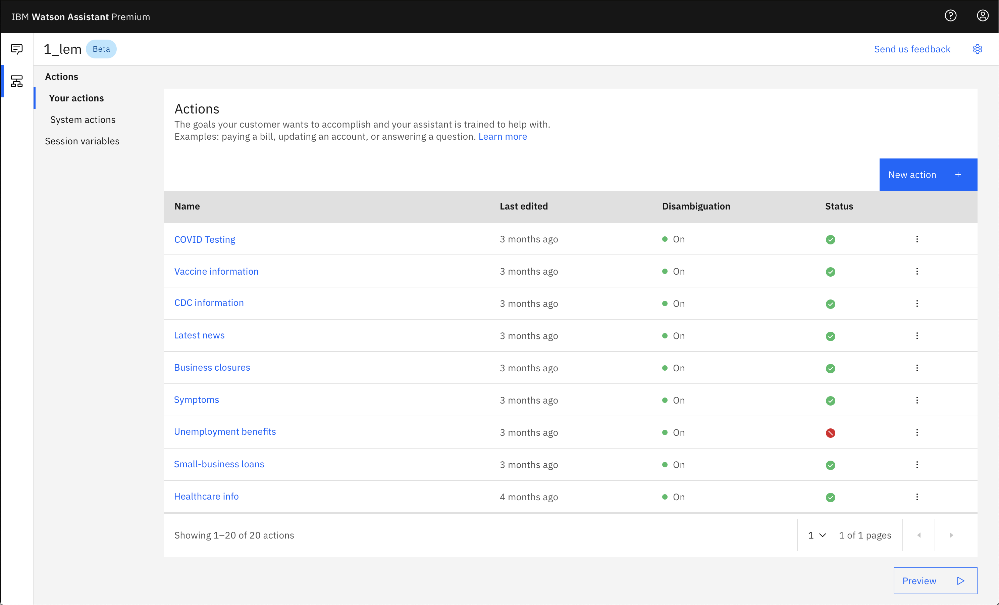
Within an Action, you have steps on the left in the Outline Panel. Step tiles allow Tanya to get a quick view into the content within each Step, making it easier for her to orient herself within an Action.
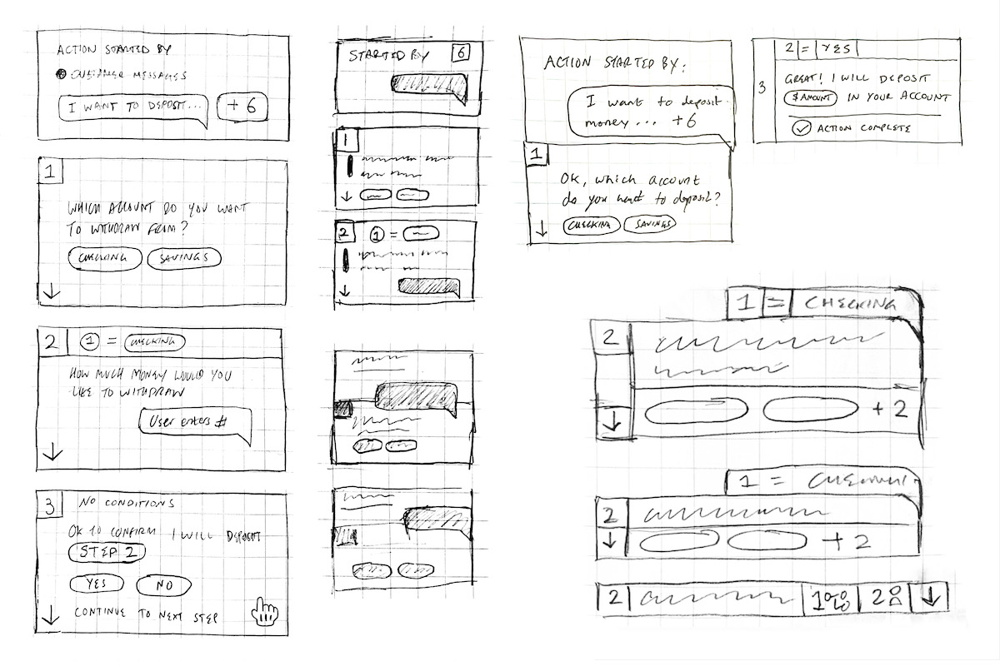
They are also dynamic in that they can be easily rearranged if Tanya wants to refactor her flow, no more copying, pasting, and deleting nodes!

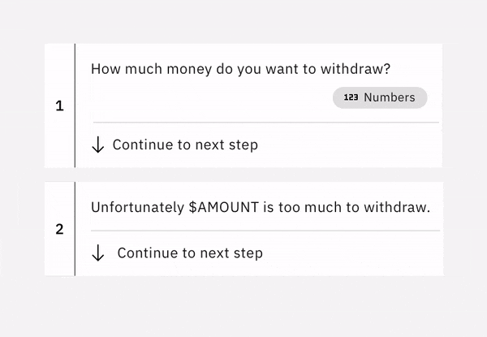
As we continued to iterate on the step tiles, we looked to take more visual cues from the Preview panel. In doing this, Tanya is able to more quickly see how her work in the Actions editor directly translates to her customer's end experience.
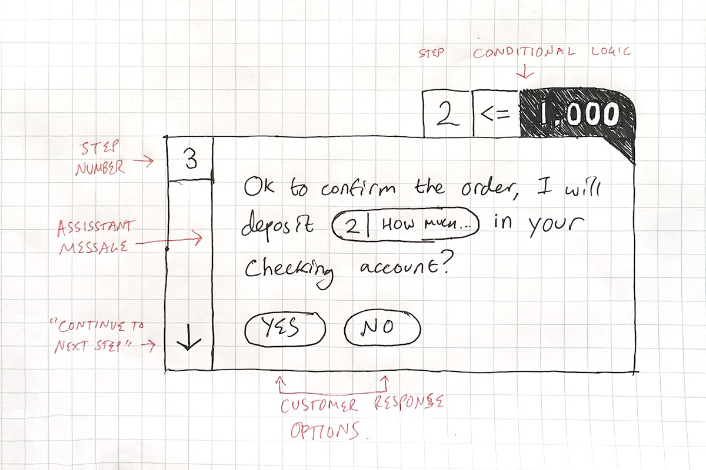

Previewing Your Work
Once Tanya is in a good place and ready to test her conversation, she goes to open the Preview panel. In Dialog, this panel slides out, covering up the majority of the content authoring section, thus preventing her from making changes on the fly.

To improve on this, we wanted to make the new Preview panel non-obstructive, giving it its own space on the right. The panel is also a 1:1 reproduction of the fully customisable “Webchat” Preview panel. This allows her to see exactly how her customer or end-user would see it in practise.
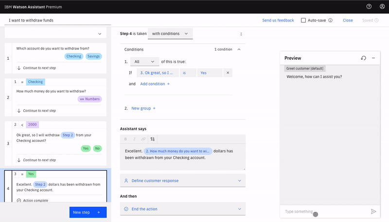
We also wanted the panel to better help Tanya in diagnosing issues in her conversation. To do that, we provided her with Action tags that enable her to both see which Action has been triggered in her conversation and give her a link to go straight to the Action in question.

As we began testing out the first high-fidelity prototypes and product alphas we found that some test-users would forget to save their work before seeing in practise in the Preview panel. To solve for this we iterated on different ways to nudge users towards saving their work before previewing. What found the most success was a persistent dynamic banner that begins by telling her to save, indicating her assistant is training, then a success banner once finished.
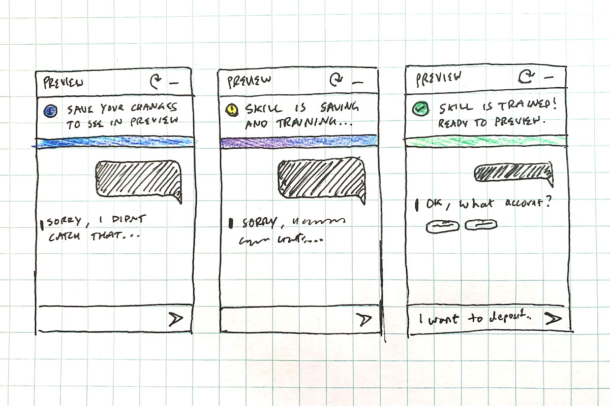

Outcomes & Impacts
This product concept had the goal of optimizing Assistant for non-technical users. In pursuit of that goal, Actions became successful in enabling those users to create chatbots 60% faster than with the current Dialog version. This meant reducing what used to take an hour to just 20 minutes! We were also able to achieve a 30% increase in new user conversion. In January 2020 Watson Assistant serviced more than ~111M monthly active users.
Check out some of our team's collaborations with local and national governments across the globe to inform and help citizens with COVID-19.
Check out some of our team's collaborations with local and national governments across the globe to inform and help citizens with COVID-19.
Animation Work
In addition to the UX/UI work I contributed, I was given the opportunity to use some of my visual skills to create various short-form animations to illustrate how Watson Assistant: Actions functioned at a high level.